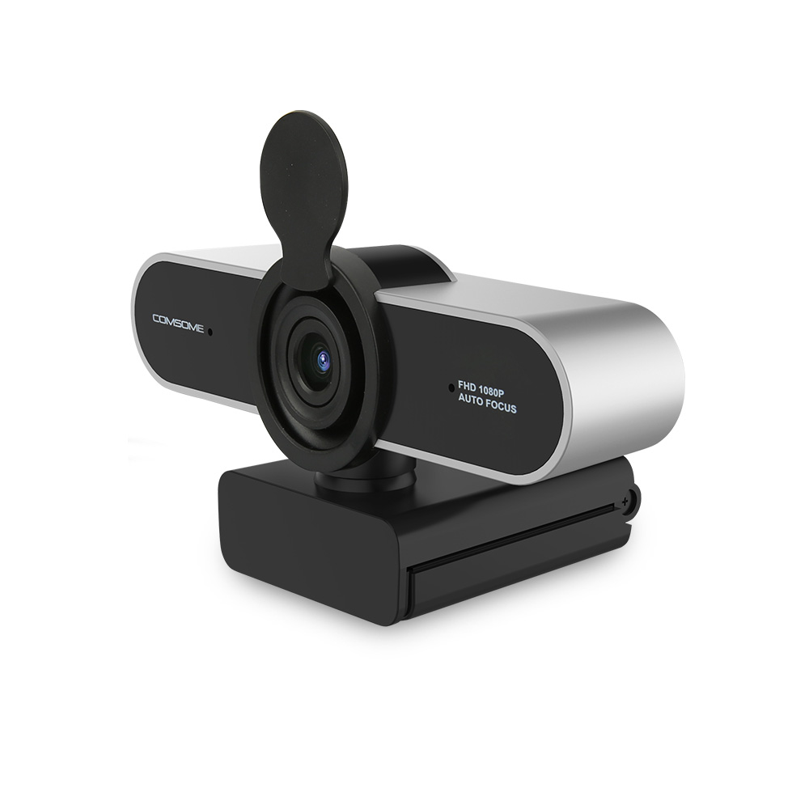
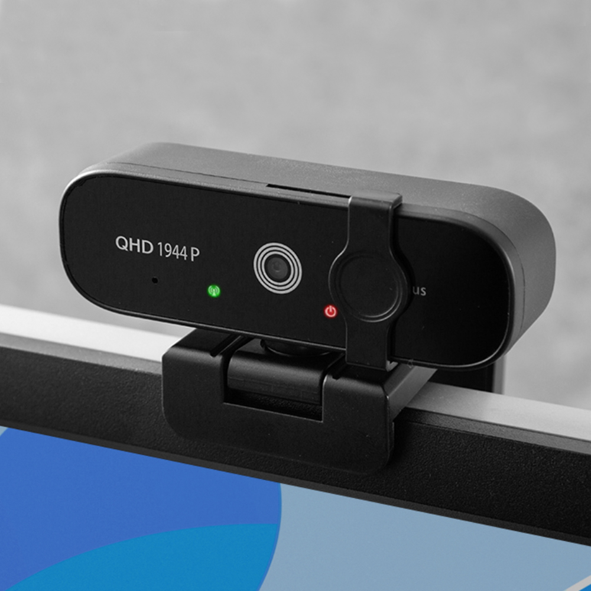
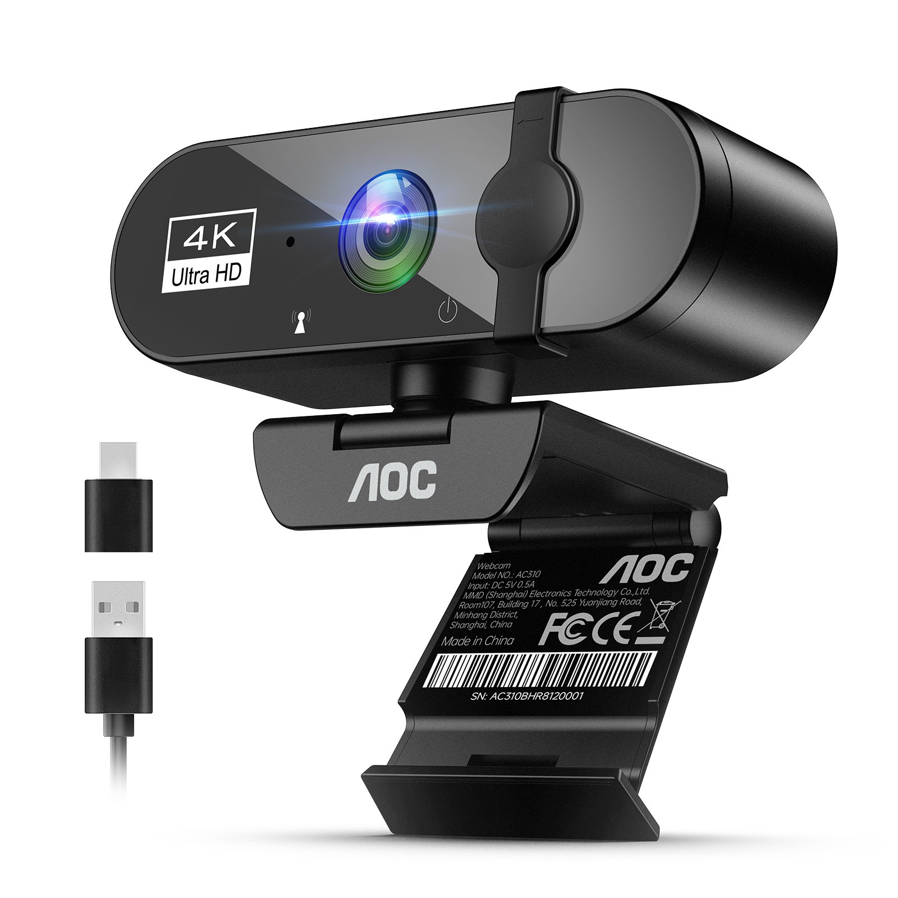

홈 › 제품리뷰 › 디지털/IT
웹캠, 화상회의용이냐 방송·수업용이냐
작성: 생활서식 모음 · 2026-07-13
파트너스 활동의 일환으로 일정액의 수수료를 지급받습니다
🛒 오늘의 쿠팡 특가 보러가기 →
웹캠, 화소(만화소) 숫자만 보고 고르시나요?
핵심은 "해상도 + 오토포커스 + 마이크" 3대 를
"화상회의만" "수업·방송" "고화질 스트리밍"용도별 정답 까지 담았으니
📋 목차
웹캠, 화상회의용이냐 방송·수업용이냐 — 결론 먼저 스펙 비교표: 한눈에 보기 웹캠 고를 때 봐야 할 4가지 회의용이냐 방송용이냐, 뭘 사야 할까? 자주 묻는 질문 (FAQ) 결론: 한 줄 요약
웹캠, 화상회의용이냐 방송·수업용이냐 — 결론 먼저
웹캠은 "어디에 쓰느냐" 로 갈려요.홈플래닛 QHD 처럼 오토포커스+마이크 내장 제품이 무난합니다. 단순 화상회의면 1만원대 HD로 충분하고, 고화질 스트리밍·전문 방송이면 4K입니다. 화소보다 오토포커스·마이크 를 먼저 보세요.
1 화상회의·입문 (가성비 초이스)
가성비

1만원대 HD 입문
1. 컴썸 USB HD 웹캠 PWC-500
1만원대 USB HD 웹캠 노트북 없는 데스크탑 화상회의용 연결만 하면 되는 간편함
고화질은 아니지만
추천 대상
웹캠 없는 데스크탑으로 가끔 화상회의하는 분 얼굴만 나오면 되는 간단한 용도 저렴하게 하나 마련하려는 분 장점
1만원대로 데스크탑에 웹캠을 부담 없이 마련 USB 연결이라 꽂으면 바로 인식돼 간편 가끔 하는 화상회의·원격 수업 참여에 충분 단점
HD급이라 고화질 방송·오토포커스·마이크 품질은 기대하기 어려움 이 제품은 가끔 화상회의용 입문 입니다. 얼굴이 또렷해야 하는 수업·방송이면 2번 QHD, 고화질 스트리밍이면 3번 4K로 가세요. "얼굴만 나오면 됨"이면 가성비 최고입니다.
한줄 리뷰
"화상회의 때만 잠깐"이면 1만원대로 충분합니다. 화질·마이크를 크게 기대하진 마시고요. 얼굴이 선명해야 하거나 방송·수업 용도면 2·3번을 보세요.
주요 스펙
제품: 컴썸 USB HD 웹캠 PWC-500 해상도: HD급 연결: USB(플러그앤플레이) 배송: 일반배송 가격: 약 15,950원 (변동 가능) ※ 실제 스펙·가격과 차이가 있을 수 있습니다
2 수업·방송 (베스트 초이스)
베스트

QHD 오토포커스·마이크
2. 홈플래닛 QHD 웹캠 (500만화소)
QHD 500만화소 선명한 화질 오토포커스 = 초점 자동 마이크 내장 + 광시야각
얼굴이 또렷하고 초점이 자동으로
추천 대상
원격 수업·강의로 얼굴이 또렷해야 하는 분 오토포커스로 흐릿함 없이 쓰고 싶은 분 별도 마이크 없이 하나로 해결하려는 분 장점
QHD 500만화소로 HD보다 선명해 수업·방송에 적합 오토포커스로 움직여도 초점이 자동으로 맞아 흐릿함이 적음 마이크 내장·광시야각이라 별도 장비 없이 하나로 해결 단점
전문 스트리밍·4K 고화질을 원하면 상위 제품이 필요 가끔 화상회의만이면 1번이 저렴하고, 4K 고화질 스트리밍이면 3번입니다. 2번은 "오토포커스+마이크+선명함" 의 실속 구간 — 수업·재택·방송 입문에 가장 무난합니다.
한줄 리뷰
"얼굴이 흐릿하게 나온다"는 불만을 오토포커스+QHD로 해결한 실속 제품입니다. 마이크도 내장이라 하나로 끝나요. 4K 전문 방송이 목적이면 3번, 가끔 회의면 1번이 맞습니다.
주요 스펙
제품: 홈플래닛 QHD 웹캠 해상도: QHD 500만화소 기능: 오토포커스 · 마이크 내장 · 광시야각 배송: 로켓배송 가격: 약 32,080원 (변동 가능) ※ 실제 스펙·가격과 차이가 있을 수 있습니다
3 스트리밍·전문 방송 (프리미엄)
프리미엄

4K UHD·노이즈캔슬링
3. AOC 4K UHD 웹캠 AC310
4K UHD 초고화질 노이즈캔슬링 마이크 내장 전문 방송·스트리밍용
얼굴·디테일까지 초고화질
추천 대상
유튜브·스트리밍 등 고화질이 필요한 분 전문적인 화상회의·강의 품질을 원하는 분 노이즈캔슬링 마이크까지 챙기고 싶은 분 장점
4K UHD로 얼굴·디테일까지 선명한 고화질 촬영 노이즈캔슬링 마이크 내장으로 목소리가 또렷 전문 방송·스트리밍·고품질 회의에 어울리는 완성도 단점
고화질 활용엔 좋은 PC·조명·업로드 환경이 함께 필요, 가격도 높음 가끔 회의면 1번, 수업·방송 입문이면 2번이 합리적입니다. 3번은 고화질 스트리밍·전문 방송 이 목적일 때 — 화질에 값을 낼 분에게 어울립니다.
한줄 리뷰
"화질이 곧 퀄리티"인 스트리밍·전문 방송이면 4K가 값을 합니다. 마이크 노이즈캔슬링까지 되고요. 다만 4K를 살리려면 PC·조명이 받쳐줘야 하니, 일반 회의·수업이면 1·2번이 실속 있습니다.
주요 스펙
제품: AOC 4K UHD 웹캠 AC310 해상도: 4K UHD 기능: 노이즈캔슬링 마이크 내장 배송: 로켓배송 가격: 약 64,900원 (변동 가능) ※ 실제 스펙·가격과 차이가 있을 수 있습니다
스펙 비교표: 한눈에 보기
가격·풍량·무게 중 본인에게 중요한 기준부터 보세요. "최고" 표시는 3제품 중 객관적 1위 값입니다.
← 좌우로 스크롤 →
웹캠 고를 때 봐야 할 4가지
화소 숫자만 보면 흐릿한 화면에 실망합니다. 이 4가지로 용도에 맞게 고르세요.
1) 해상도 — 용도에 맞게
HD: 가끔 화상회의·간단한 참여용QHD(1440p): 수업·재택·방송 입문에 선명4K: 스트리밍·전문 방송 (PC·조명 뒷받침 필요)2) 오토포커스 — 흐릿함 방지 (의외로 중요)
고정초점은 거리가 바뀌면 흐릿해질 수 있음 오토포커스 는 움직여도 초점을 자동으로 맞춤얼굴을 가까이서 보여주거나 물건을 비추면 특히 유용 3) 마이크 내장 — 별도 장비 없이
마이크 내장이면 이어폰·헤드셋 없이 바로 통화 가능 노이즈캔슬링 마이크면 주변 잡음이 덜 섞임 이미 좋은 마이크가 있으면 화질 위주로 골라도 됨 4) 시야각·저조도 — 환경 대응
광시야각은 여러 명이 한 화면에 들어올 때 유리 혼자 쓰면 시야각이 너무 넓으면 배경이 과하게 나올 수 있음 어두운 방이면 저조도 보정 성능도 확인 회의용이냐 방송용이냐, 뭘 사야 할까?
쓰는 용도만 정하면 답이 나옵니다.
가끔 화상회의: 1번 컴썸 HD → 1만원대 입문수업·재택·방송 입문: 2번 홈플래닛 QHD → 오토포커스+마이크고화질 스트리밍·전문: 3번 AOC 4K → 초고화질자주 묻는 질문 (FAQ)
Q1. 웹캠은 화소(만화소)가 높을수록 좋은가요? 화소도 중요하지만 그것만으로 화질이 결정되진 않습니다. 렌즈 품질, 오토포커스, 저조도 보정, 센서 등이 함께 작용합니다. 특히 고정초점 제품은 화소가 높아도 초점이 안 맞으면 흐릿해집니다. 그래서 해상도(HD/QHD/4K)와 함께 오토포커스 지원 여부를 보는 게 실제 선명도에 더 중요합니다.
Q2. 화상회의만 할 건데 4K까지 필요한가요? 대부분 필요 없습니다. 일반 화상회의는 상대방 화면에서도 크게 확대되지 않고, 회의 플랫폼이 화질을 압축하는 경우도 많아 HD~QHD로 충분합니다. 4K는 유튜브·스트리밍처럼 고화질이 그대로 전달되는 용도에서 값을 합니다. 게다가 4K를 제대로 쓰려면 PC 성능·조명·업로드 환경도 받쳐줘야 하므로, 단순 회의면 과투자가 될 수 있습니다.
Q3. 오토포커스가 왜 중요한가요? 거리가 바뀌어도 화면이 흐려지지 않게 해주기 때문입니다. 고정초점 웹캠은 정해진 거리에서만 선명하고, 얼굴을 가까이 대거나 물건을 비추면 초점이 안 맞아 흐릿해집니다. 오토포커스는 대상 거리에 맞춰 초점을 자동으로 조절해, 움직이거나 물건을 보여줄 때도 또렷하게 나옵니다. 수업·제품 시연 등에는 특히 유용합니다.
Q4. 웹캠에 마이크가 내장돼 있으면 따로 안 사도 되나요? 기본 통화·회의용으로는 충분합니다. 내장 마이크가 있으면 이어폰·헤드셋 없이 바로 목소리를 전달할 수 있고, 노이즈캔슬링 마이크면 잡음도 덜 섞입니다. 다만 스트리밍·녹음처럼 목소리 품질이 중요한 용도라면 별도 마이크가 더 낫습니다. 이미 좋은 마이크나 헤드셋이 있다면 웹캠은 화질 위주로 골라도 됩니다.
Q5. 노트북에 카메라가 있는데 웹캠을 따로 사야 하나요? 용도에 따라 다릅니다. 노트북 내장 카메라는 화질·화각이 제한적이고 각도 조절이 어려운 경우가 많습니다. 데스크탑을 쓰거나, 화질을 높이고 싶거나, 각도·위치를 자유롭게 잡고 싶다면 외장 웹캠이 유리합니다. 반대로 노트북으로 가끔 회의만 한다면 내장 카메라로도 충분할 수 있습니다.
결론: 한 줄 요약
1) 컴썸 HD 웹캠 — 약 15,950원 / 가끔 화상회의. 1만원대 입문, 얼굴만 나오면 OK.2) 홈플래닛 QHD — 약 32,080원 / 수업·방송. 오토포커스+마이크 내장 실속 표준.3) AOC 4K UHD — 약 64,900원 / 스트리밍·전문. 초고화질+노이즈캔슬링 마이크.이 포스팅은 쿠팡 파트너스 활동의 일환으로, 이에 따른 일정액의 수수료를 제공받습니다.